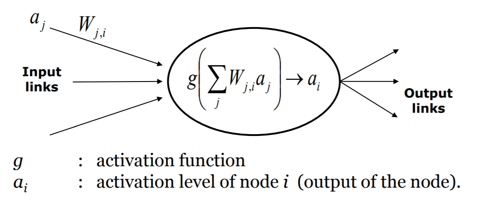

Working at Volvo involves high workload which involves among other factors stress, physical strain, high noise levels and high variety of heat. All of these aspects could affect workers health. A big challenge for Volvo is for the workers to actually use the safety-clothing at hand, as these are too warm and the workers would rather put themselves at risk when using welders instead of using protective gear. To prevent users from getting too warm when welding a set of adaptive clothing could be helpful. By making the clothing a part of a smart environment the temperature could be adjusted according to the user in a specific situation and thereafter learn patterns of when and where the user usually gets “overheated”.
The aim of this project is to create a smart environment that adapts the worker's temperature depending on situation. ● When exposed to heat or getting too warm, how can cooling be applied on the user? ● What are the relevant aspects of the environment? ● How do we know when temperature adjustment is necessary and noninvasive?
During the project the design method used will be linear, due to the lack of time. A concept will be produced, and if enough time, a prototype will be made. The occupational therapy students(OT students) will be involved during the design process, offering valuable input in the concept. Since the OT students have some contact with Volvo some input will be given from the workers.
A worker is grabbing the welder, which triggers the cooling equipment both by the grabbing of the welder and by the position of the worker. When the worker is welding the body temperature is rising and this also triggers the equipment and is cooling the person down. Now the worker is getting too cold so the person is adjusting the temperature which the equipment is acknowledging in its learning for this specific worker. When the worker moves on to another task the equipment adjusts the temperature according to the outer body temperature, the task and what it knows about the workers different patterns.
● A prototype the simulate the function of the equipment. ● A visual demonstration of the system and how it is learning behaviours and adjusting the temperature. ● Posters with information about the product.
The system has several inputs and one main output, adjustment of warmth of workers at Volvo. There are two viable options for reading and interpreting these inputs, either by using a decision tree or using a neural network. This system will focus on using the latter and why will be explained in the following paragraphs.
A neural network has a larger possibility for customizing the system to each unique individual whom uses it without having to account for each possible solution beforehand. A decision tree has the limitation that each given state must be assigned beforehand, for example “if welder is on apply cooling”. Therefore, a neural network is used when you want the system to design its own states depending on the actions of the user.
A neural network is built up by input, nodes and outputs. These inputs are binary and represent a sensor or action, nodes are the computational units of the neural network and the output are the result of the computations. These form the three layers of our ANN (Artificial neural network) and they are connected through links(edges) with different strengths/weights to represent the bond of each input towards a specific outcome.
InputIn the system we have several inputs that make up the first layer of the neural network, which is the temperature of the user, location, welder information such as if the welder is on/off and how long the user have been welding.
NodesNodes make up the second and most important layer of the neural network, the computational part of the network. They are responsible for calculating the total weight of all inputs and send this through an activation function. The activation function returns a representation of the likelihood for a specific output.
 OutputThe final layer of the neural network which will indicate an action to be taken, which can be one of the following: increase/decrease warmth & do nothing.
Perceptron trainingPerceptron training is the core functionality of a neural network, this is the part where all the weights of the neural network are adjusted according to the outputs. If a user is being cooled down when it’s not supposed to the network should adjust accordingly to prevent this from happening in the future. This is the largest struggle of a system of this scale, how do we train the weights in the beginning so that the user doesn’t get affected in a negative way and stops using the equipment all together. This is where the user input from the welding helmet and controls for the cooling system comes in handy. In the beginning the system will work as a thermostat, only change the heating when receiving user input. When a user gets cold he/she tells the system to heat up, the neural network saves the state and turns up the heat. After recording data from the users input the system can start to predict when to adjust the temperature and when to stay idle. After each prediction the neural network waits for the user to respond, if the user responds by changing the temperature a negative result is returned to the neural network and the weights are adjusted accordingly. For example: The system predicts that the user is going to get warm and starts a cooling process, the user responds by turning up the heat. The neural network changes the weights responsible for these false actions, i.e. the weights for “do nothing” and “apply heat” are increased and the “cool down” weights are decreased.
Each input to the neural network is to be accounted for as a perceptron, we'll discussion each perceptron and their main purpose in the section that follows. Welder statusIs the indication if and when the user is activly using the welder. An important indication of plausible overheating. Total welding timeIndicates how long the user has been welding, each timestep should increase the possibility of cooling the user down. Body TemperatureSensor picking up the outer body temperature. Surrounding TemperatureIndication on the room Temperature used as a reference, for example during the summer this indication is of high value. LocationIf the user is at the welding station or if he/she is idle on a coffebreak should be accounted for. Time of dayTime of day might affect the situational heating of the person using the equipment.
● The user should have the possibility to adjust the amount of cooling ● The system should learn how the user is performing its task, creating autonomous cooling ● The wristband should be comfortable and nonivasive ● The wristband should not obstruct the worker performing his or hers tasks
Itemised lists: ● Thermoelectric generator. Needed for prototype to induce cooling to the users wrist ● Temperature sensor. Indication of skin temperature of user ● Location sensor: To invoke specific methods at different locations. ● Regulator To regulate the input voltage of the the thermoelectric generator. ● Softlab: To be able to create a wearable containing the thermoelectric generator and its sensors. ● Tutoring: We desperately need help assembling the electronic components.
Table 1:Project divided into weekly segments
Since the device will record some data from the user some considerations is necessary. The recorded data should not be accessible by anyone, apart from the system itself. The system is not supposed to monitor how the workers are performing their task. The problem lies within convincing the users that their data is not being used to monitor them.
The expected result is a wearable which helps the worker cool down during its physical tasks. The concept is a device which adapts to a specific user(not enough time to implement during the course).
Our prototype is a "Proof of concept" where we induct cooling upon the users by regulating the voltage to a thermal generator. This is soley used for enhancing our concept, when we present we will use it as means of showing that it is possible to cool down with rather simple means.
Regarding the work flow, we all agree that it has gone well. We are pleased with the collaboration with the OT students. Since the start of the project we have had an open discussion, where everyone has had the opportunity to be heard. The meetings have been efficient and fruitful. Though we are satisfied with the collaboration, we felt that we were thrown into a project which was already halfway finished. Resulting in us arriving to a kick-off and briefing completely unprepared. As mentioned above, the prototype was made in SoftLab. The assistance we received there was very useful, and we managed to produce a good enough prototype in a short amount of time. Because of the lack of time in the project, the development of the prototype has suffered. However, we are satisfied with the result. Regarding improvements of the projects, user integration has not been considered to the extent we would like. From the collected data we were given by the OT students, we have developed a concept which addresses the main problem for the workers as well as the goals of the course. Once again, the lack of time has been the primary reason why no user testing has been made. In conclusion, we believe the developed concept will improve the work environment. There are some technical barriers to overcome, which might be challenging, but not at all impossible.
Ed Hayward,(2008),Massachusetts institute of technology,MIT researchers achieve dramatic increase in thermoelectric efficiency,Boston, Article: http://news.mit.edu/2008/thermoelectric-0320 G. Jeffrey Snyder(2008),Small Thermoelectric Generators Article: http://www.electrochem.org/dl/interface/fal/fal08/fal08_p54-56.pdf Gunathilake Banda Delkumburewatte,(2011),Department of textile and apparell Technology, The Open university of Sri Lanka Article:http://www.tandfonline.com/doi/full/10.1080/00405000.2011.587647?scroll=top&needAccess=true